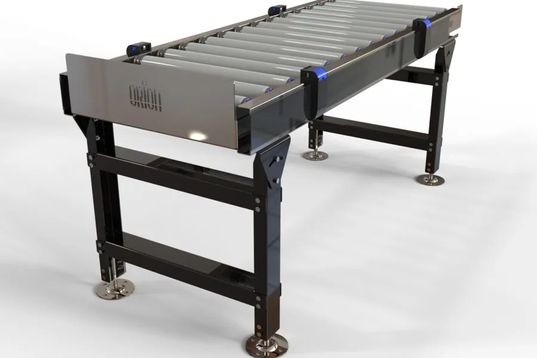
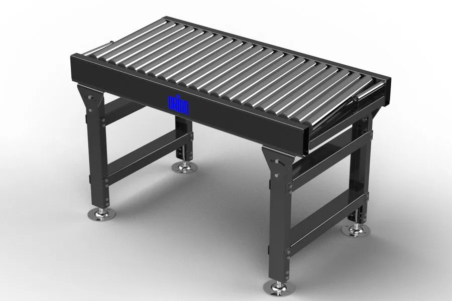

The short answer
How a powered roller conveyor works
A powered roller conveyor moves product over a bed of rollers driven by motors — in modern installations, usually 24V motorised drive rollers (MDR) driving short groups of neighbouring rollers, so the conveyor is naturally divided into independently controlled zones. Product sits on the roller tops and is carried forward by friction between its base and the rollers.
Where it wins. Anything with a firm, flat, regular base: cartons, totes, trays, parcels in boxes. Zoned drive is the headline advantage — because each zone runs independently, the conveyor can accumulate, meter and release product with precision, and a stopped line consumes almost no energy because empty zones simply switch off. Maintenance is section-level: a failed drive roller in most installations is a single lightweight component, swapped without specialist lifting kit and without dismantling the line around it. Roller conveyor is also typically the quieter and more energy-efficient family on straight, level running, since only occupied zones draw power.
Where it loses. Product that sags between rollers. Polybags, soft packaging, very small items and anything narrower than about three roller pitches ride badly or fall through. Gradients are the other hard limit — product on rollers slides on any meaningful slope, so powered roller is essentially a level-running technology.

How a belt conveyor works
A belt conveyor carries product on a continuous belt running over a slider bed or rollers, driven by a motorised pulley. The product never spans a gap: whatever its shape, size or packaging, it sits on an unbroken moving surface.
Where it wins. Everything roller struggles with. Bags and polybags convey cleanly because there is nothing to sag into. Small, fragile and irregularly shaped items are fully supported. And inclines are belt's signature move: the belt surface grips the product, so typical installations run gradients that move product between floor levels, over walkways and up into mezzanines and pick towers — something rollers simply cannot do. Belt also gives a stable, flat surface for scanning and weighing sections, where product presentation matters.
Where it loses. Accumulation. A belt is one surface moving at one speed — product on it cannot queue without either stopping the whole belt or letting items collide. Maintenance is also chunkier: the belt itself is a wear item, tracking needs periodic attention, and replacing a belt is a planned job on the whole conveyor section rather than a component swap. In most installations belt runs slightly louder and hungrier than zoned roller on equivalent level sections, because the whole drive runs whenever anything (or nothing) is on the belt.

ZLP accumulation: why dispatch lines queue on rollers
Zero-line-pressure (ZLP) accumulation is the strongest single reason powered roller dominates queuing sections. Each zone of the conveyor has its own drive and its own sensor. When the line ahead stops — a sorter pauses, a vehicle is being loaded, a labeller cycles — each zone stops with exactly one item held on it. Items wait in line without touching each other. No back pressure builds up, nothing crushes, nothing interlocks into a jam, and when the line releases, product feeds forward in a controlled, singulated sequence.
That behaviour is precisely what dispatch lines need. A line feeding a sorter, a scan tunnel or a print & apply labeller must present items one at a time, with a gap, on demand — and ZLP zones are how the conveyor holds a buffer of work ready to release at exactly the rate downstream equipment can take it. Without accumulation, every downstream pause ripples straight back to the pack bench and stops people working. With it, the conveyor absorbs the pause and the operation keeps moving.
Side by side: the honest comparison
The table below is qualitative and typical — the right specification for a real line depends on the product profile, rates and layout, which is what the design phase is for.
| Criterion | Powered roller | Belt |
|---|---|---|
| Product suitability | Cartons, totes, trays — firm, regular bases; struggles with bags, smalls and soft packaging | Bags, irregular items, small and fragile product — full surface support; handles cartons happily too |
| Accumulation | Excellent — ZLP zones queue product without contact and release it singulated | Poor — one surface, one speed; queuing means stopping the belt or letting items touch |
| Gradients | Level or near-level only; product slides on slopes | Strong — inclines and declines are belt territory, moving product between levels |
| Noise & energy | Typically quieter and more efficient on level runs — empty zones switch off | Typically slightly louder and hungrier — the whole drive runs regardless of load |
| Maintenance profile | Section-level — individual drive rollers swap out quickly in most installations | Belt is a wear item; tracking needs attention; belt changes are planned section jobs |
| Cost profile | Broadly similar per metre for straight runs; usually the economical way to buy accumulation | Broadly similar per metre; the economical way to buy inclines and bag handling |
Qualitative, market-typical characteristics — not quotations. Real behaviour depends on specification, product profile and controls scope.
The hybrid reality: real systems use both
The roller-versus-belt question is usually answered "yes". A typical dispatch system runs belt up the incline from the pack area, powered roller with ZLP accumulation along the spine where orders queue, a belt section through the scan-and-label station, and roller again into the loading fingers. Between the straight sections sit the connective tissue: curve conveyors that carry product around corners, merge conveyors that bring multiple lines into one, and alignment conveyors that square product against a datum edge ready for scanning, labelling or sortation.
That is why Orion manufactures the whole family — powered roller, belt, curve, merge and alignment conveyors with ZLP accumulation, plus pallet handling for heavy unit loads — rather than one preferred technology. When the same factory designs and builds every section, the mix is chosen on what your product needs at each point in the line, not on what happens to be in the catalogue.
The food-grade variant
Food and beverage environments push conveyor specification further: stainless and food-safe materials, washdown-tolerant construction, and hygienic design that can be cleaned without dismantling. Orion builds food-grade conveyor to this standard — the proof case is Tate & Lyle, where bespoke food-grade sugar-line conveyors run a continuous 24/7 operation with zero permitted downtime. When the process never stops, the conveyor's reliability and cleanability stop being nice-to-haves and become the specification.
How Orion delivers
Every conveyor Orion supplies is designed, fabricated, wired and control-coded in-house at our Chichester facility — mechanical, electrical, PLC and WCS under one roof, ISO 9001:2015 certified, UKCA/CE marked. Smaller conveyor packages typically reach site in 6–10 weeks from order, arriving pre-built and tested so on-site work is short — and installs into live operations without stopping them are standard practice, not a special request.
Commercially, everything is available monthly: entry systems from around £4,000 per month on a 60-month term, subject to specification and approval. Against manual handling at £16.30/hr all-in, a conveyor line is usually the fastest-paying automation there is — the manual sortation cost guide shows the labour maths, the UK cost guide shows the system maths, and the ROI calculator runs both with your own volumes. Whether you are a parcel centre, a 3PL or a fulfilment operation, the starting point is the same: tell us what the product is, and we will tell you which surface it should ride on.